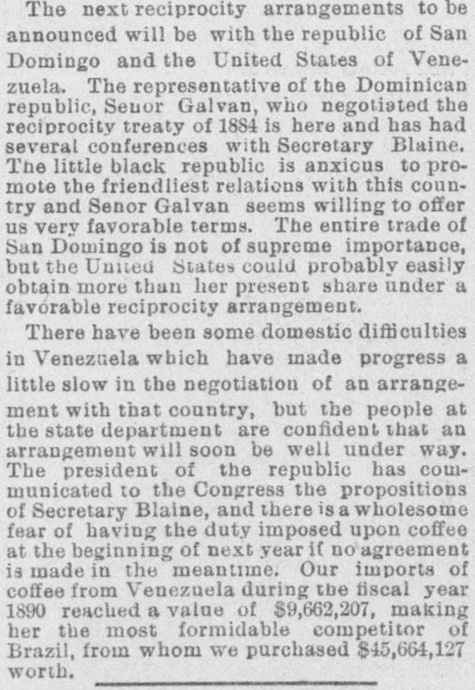
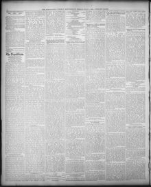

See the full pageVer la página completaTne little black republic is anxious to pro mote tbe friendliestLa pequeña república negra desea promover las más amistosas
The Springfield Weekly Republican reported that Dominican representative Manuel de Jesús Galván was meeting in Washington with Secretary of State James G. Blaine to establish a commercial reciprocity agreement. The Dominican government expressed eagerness for closer ties and offered favorable trade concessions to expand commerce between the two nations.El Springfield Weekly Republican informó que el representante dominicano Manuel de Jesús Galván se encontraba reunido en Washington con el secretario de Estado James G. Blaine para establecer un acuerdo de reciprocidad comercial. El gobierno dominicano manifestó su vivo interés por estrechar lazos y ofreció concesiones comerciales favorables para expandir el comercio entre ambas naciones.
FULL TEXT:TRADUCCIÓN:
The next reciprocity arrangements to be announced will be with the republic of San Domingo and the United States of Venezuela. The representative of the Dominican republic, Senor Galvan, who negotiated the reciprocity treaty of 1884 is here and has had several conferences with Secretary Blaine. The little black republic is anxious to promote the friendliest relations with this country and Senor Galvan seems willing to offer us very favorable terms. The entire trade of San Domingo is not of supreme importance, but the United States could probably easily obtain more than her present share under a favorable reciprocity arrangement.Los próximos arreglos de reciprocidad a anunciarse serán con la república de Santo Domingo y los Estados Unidos de Venezuela. El representante de la república dominicana, el Señor Galvan, quien negoció el tratado de reciprocidad de 1884 está aquí y ha tenido varias conferencias con el Secretario Blaine. La pequeña república negra está ansiosa de promover las relaciones más amistosas con este país y el Señor Galvan parece dispuesto a ofrecernos términos muy favorables. El comercio entero de Santo Domingo no es de suprema importancia, pero los Estados Unidos probablemente podrían obtener fácilmente más que su parte presente bajo un arreglo de reciprocidad favorable.
There have been some domestic difficulties in Venezuela which have made progress a little slow in the negotiation of an arrangement with that country, but the people at the state department are confident that an arrangement will soon be well under way. The president of the republic has communicated to the Congress the propositions of Secretary Blaine, and there is a wholesome fear of having the duty imposed upon coffee at the beginning of next year if no agreement is made in the meantime. Our imports of coffee from Venezuela during the fiscal year 1890 reached a value of $9,662,207, making her the most formidable competitor of Brazil, from whom we purchased $45,664,127 worth.Ha habido algunas dificultades domésticas en Venezuela que han hecho el progreso un poco lento en la negociación de un arreglo con ese país, pero la gente en el departamento de estado está confiada de que un arreglo pronto estará bien encaminado. El presidente de la república ha comunicado al Congreso las proposiciones del Secretario Blaine, y hay un temor saludable de que se imponga el derecho sobre el café a principios del año próximo si no se hace ningún acuerdo en el entretanto. Nuestras importaciones de café desde Venezuela durante el año fiscal 1890 alcanzaron un valor de $9,662,207, haciéndola la competidora más formidable de Brasil, de quien compramos por valor de $45,664,127.
Springfield Weekly Republican. Springfield, Mass., May 8, 1891.
See the original at the Library of CongressVer el original en la Biblioteca del Congreso
Published by: Samuel Bowles and SonPublicado por: Samuel Bowles and Son
Edition: Edition 1Edición: edición 1
Page: 4Página: 4
Frequency: weekly (1851–1946)Frecuencia: semanal (1851–1946)
Collection: Chronicling America, Library of CongressColección: Chronicling America, de la Biblioteca del Congreso
LCCN: sn83020847LCCN: sn83020847
ISSN: 2996-3117ISSN: 2996-3117
OCLC: 9584529OCLC: 9584529
Rights: public domain, according to the Library of CongressDerechos: dominio público, según la Biblioteca del Congreso